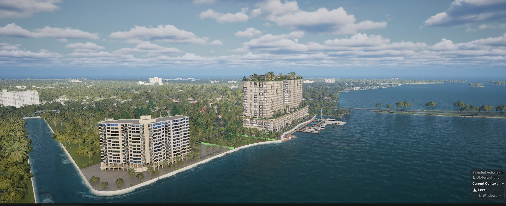

A place, at your pace.
Interactive views help people understand layout, scale and the relationship between spaces. A viewer can follow their own curiosity.
A plan explains a space.
An experience lets you discover it.
RAY
brings the two closer.
 Experience RAY ↗
Experience RAY ↗
360° orbit · Daylight controls · Location map
Desktop & mobile
· Concept geometry from supplied references
Real-time presentation built around
the architecture and its
audience.
Interactive views help people understand layout, scale and the relationship between spaces. A viewer can follow their own curiosity.
Materials, atmosphere and design options can become part of the conversation. The scope is shaped around what your project needs to communicate.
From an experience center to a browser presentation, we build a useful way for an audience to meet the architecture.

Materials. Light. Movement.
Watch the architectural film.
Interior and exterior renders, films, walkthroughs, 360° tours and RAY experiences. We work with your plans, models and references to agree on the format, visual direction and deliverables.
Explore architectural services ↗